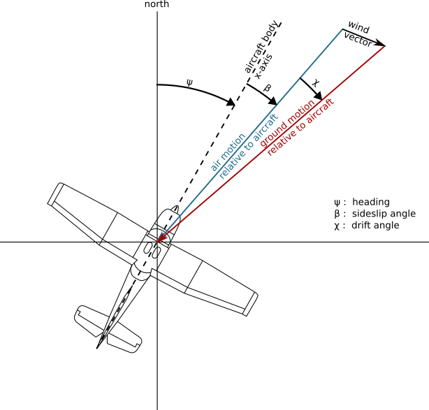
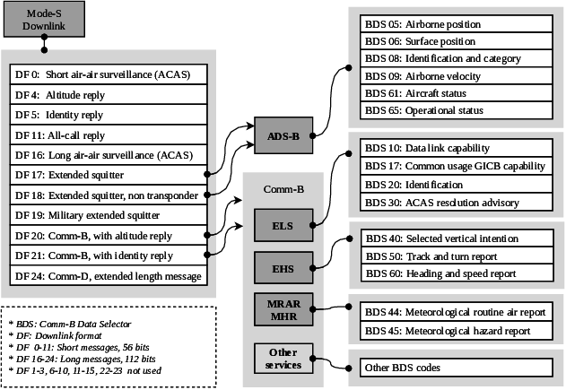

30 Flight tracking technologies
WarningTODO for this page
This page has been copied or moved into the experimental new/ architecture. Review the scope, trim or split content where needed, fix internal links, and add missing material described by the new table of contents.
A trajectory is a mathematical abstraction used to describe the evolution of a moving object with a finite list of parameters. The most common features in aviation include latitude, longitude, altitude, all indexed by time, with first derivatives such as ground speed, track angle and vertical rate. Depending on the application, some models would expect more features. For example, aircraft performance models could require the pitch, roll and yaw angles, the true air speed, the indicated air speed, the Mach number, etc.
This chapter describes several common formats for trajectories depending on available technology to record them. Associated data sources come with different licensing terms which must be kept in mind when developing or applying computing methods.
TipFlight data recorders
Obviously, the most comprehensive data source is produced by the aircraft itself, specifically by the Flight Data Recorder (FDR) or Quick Access Recorder (QAR). Use cases for such data range from Flight Operational Quality Assurance (FOQA), post-ops analysis to improve flight safety or operational efficiency, system analysis for predictive or condition-based maintenance. Such data typically contains over 2000 flight parameters and is considered very sensitive by aircraft operators as it may expose some commercial strategies.
It is usually difficult for researchers to get full access to such data, even under non-disclosure agreement. Also, as aircraft operators own the data, this solution cannot be used for global analyses of all aircraft flying in a designated area.
30.1 Radar tracks
The concept of Primary Surveillance Radar (PSR) is fairly simple: it is a rotating radio transponder with an omnidirectional antenna. Commonly, the radar transmits a one-microsecond pulse for every one millisecond and listens to the reflections from the aircraft. The position of the aircraft is measured by the distance and angle to the radar. The distance is known as the slant distance, which is the line-of-sight distance between an aircraft and the radar. It can be calculated by measuring the time difference between the original signal and the reflection received, since the speed of the radio wave (speed of light) is known. The azimuth angle of the aircraft is determined by the rotation angle of the radar.
The slant distance of an aircraft does not always correspond to the horizontal distance to the radar. Since the civil radar usually does not provide elevation information on the target, it is not possible to accurately convert the slant distance to the horizontal distance. Historically, it is sufficient to use primary radar for separating aircraft without considering these altitude differences. However, other systems have been put in place to provide air traffic controllers more accurate altitudes of the aircraft.
Important
Air Navigation Service Provider (ANSP) own the data produced by the surveillance radar installations they operate.
Radar tracks have a prestigious aura for obvious coverage reasons. However, it is rather unlikely that you gain access to radar trajectories on a systematic basis. Moreover, on international flights, getting a full trajectory would require agreements with each ANSP of all countries aircraft have flown.
In general, trajectories based on radar plots produced by computer systems contain an identifier, timestamps, latitudes, longitudes, altitudes, ground speed, vertical speed and track angle. Kalman filters help to smoothen trajectories and compute the derivatives.
30.2 ADS-B
Automatic Dependent Surveillance–Broadcast (ADS-B) is probably one of the most well-known source of aircraft trajectories, popularized by famous websites such as Flightradar24 or The OpenSky Network. It is a surveillance technology designed to allow aircraft to broadcast their flight state periodically without the need for interrogation.
The word automatic refers to the fact that no inputs from controllers or pilots are required. The word dependent indicates this technology depends on information from other onboard systems, such as air data systems and navigation systems.
Important
Messages do not contain any timestamp information. Timestamps are usually appended by the receiver of the messages, based on the reception time (and not the time of emission by the aircraft).
Information broadcast in ADS-B messages contains, in addition to a unique 24-bit transponder code, named icao24 in examples below:
- identification information: the callsign (an 8-character non-unique identifier of the mission or the route of the aircraft) and the wake vortex category;
- positional information: latitude and longitude in degrees (encoded in Correlated Position Report (CPR) format), barometric altitude (converted to ISA equivalent), and GPS altitude in feet;
- velocity information: track angle in degrees, ground speed in knots, vertical rate in feet per minute;
- uncertainty information around the position and the velocity of the aircraft.
Positional and velocity information is computed by the aircraft based on GNSS and inertial navigation systems of the aircraft.
Warning
There is a common confusion in aviation between three designations for angles:
- the track angle represents the direction the aircraft is flying. It is the angle of the speed vector, ranging from 0 (North) to 360 degrees (90° for East, 270° for West);
- the heading angle represents the direction the nose the aircraft is pointing at;
- the bearing angle usually represents the direction of/to a static object, e.g., the bearing of a runway, or the bearing to a navigational point.

NoteA note about callsign identifiers
A callsign is an eight-character identifier used for communication with the Air Traffic Control (ATC).
General aviation commonly uses the aircraft registration (tail number) as a callsign; commercial flights use a (often unique) identifier per route, starting with three letters identifying the airline operator, BAW (pronounce “speedbird”) for British Airways, AFR for Air France, etc.
Outside commercial aviation, the callsign commonly refers to the mission operated by an aircraft, and this can help distinguish the original intention of an aircraft used for specific purposes.
For example, aircraft F-HNAV uses the CALIBRA callsign for flight inspection and Very High Frequency Omnidirectional Range Station (VOR)/Instrument Landing System (ILS) calibration operations, the JAMMING callsign during jamming investigation and a more regular NAK callsign when commuting between airfields.
Similarly, test flights operated by Airbus use an AIB callsign; Boeing uses a BOE callsign; ambulance helicopters often use explicit callsigns: SAMU in France (stands for Urgent Medical Aid Service) and LIFE in many European countries.
Australian firefighting operations use a specific callsign depending on the role of the aircraft during the operations: BMBR for firebombing; SPTR for fire spotters; BDOG, bird dog, for fire attack supervisions (often subcontracted); and FSCN, fire scan for remote sensing fire operations.
Even though all information is not available at each timestamp, tabular data (csv) is a common format to represent trajectory data. In this example, the icao24 code 7c4779 matches a Qantas Boeing B747 registered as VH-OEJ.
This tabular information can easily be represented on a map, or as a regular plot for non-geographical features.
NoteWhat broadcasting means
The letter “B” in ADS-B means broadcast: aircraft broadcast messages at the same rate regardless of ground equipments and infrastructure, even if no aircraft or receiver is within range. Aircraft broadcast ADS-B data even over oceans, poles, or deserted areas.
Recently, “Space-based ADS-B” has been implemented so that a constellation of low-altitude satellites attempts to receive and decode ADS-B messages from aircraft in the troposphere and forward positional information to ground-based stations. There have been high expectations around this technology which is expected to revolutionize traditional air traffic management over areas such as the North-Atlantic Ocean, controlled by Shannon (Ireland) and Gander (Canada) Area Control Centre (ACC)s.
Tip
A lot of details about the contents of ADS-B messages, Mode S data and their decoding is detailed in a different book, The 1090 Megahertz Riddle [1].
30.3 Mode S
The Secondary Surveillance Radar (SSR), also known as the Air Traffic Control Radar Beacon System (ATCRBS), was designed to provide air traffic controllers more information than what is provided by the primary radar. The secondary radar can be installed separately or installed on top of the primary radar. It uses a different radio frequency to actively interrogate the aircraft and receive information transmitted by the aircraft.
The SSR transmits interrogations using the 1030 MHz radio frequency and the aircraft transponder transmits replies using the 1090 MHz radio frequency. In the early design of SSR, two civilian communication protocols (Mode A and Mode C) were introduced. Mode A and Mode C respectively allow the SSR to continuously interrogate the identity (squawk code) and the altitude of an aircraft. The squawk code in Mode A is a unique 4-octal digit code given by air traffic controllers to aircraft in their Flight Information Region (FIR) for identification. The altitude in Mode C refers to the barometric altitude obtained from the aircraft’s air data system.
Tip
Some squawk codes are reserved for particular emergency situations:
7500for hijacking situations;7600for radio failures;7700for general emergencies [2].
Mode S (Mode Select Beacon System) was designed by Lincoln Laboratory at Massachusetts Institute of Technology in the 1970s. Based on different iterations of hardware and software design in the 1980s, the implementation of Mode S in air traffic control began in the 1990s. Since then, Mode S has become one of the main sources for aircraft surveillance.
The main characteristic of Mode S is its selective interrogation, which allows the SSR to interrogate different information from different aircraft separately. Unlike the limited number (4096) of unique identification codes in Mode A communication, the Mode S transponder is identified by a 24-bit transponder code, which can support up to \(2^{24} =\) 6,777,216 unique addresses.
Important
As Mode S consists in selective interrogation, it is strongly dependent on ground infrastructure around. Mode S messages are only sent in reply to an interrogation, therefore no such data can be expected from an aircraft out of range of an SSR, over the ocean, poles or deserted areas.
The Mode S uplink signal contains parameters that indicate which information is desired by the air traffic controller. Many Downlink Format (DF)s are described in the Mode S protocol in order to reply to such information:
Altitude and identity replies (DF 4/5) are rough equivalents to Mode A/C protocols;
All-call reply (DF 11) is the reply sent by Mode S compliant transponders to queries addressed to Mode A/C capable transponders. It contains the 24-bit transponder code, the transponder capabilities [3], and the interrogator identifier;
ACAS short and long replies (DF 0/16): Airborne Collision Avoidance System (ACAS) is a system designed to reduce the risk of mid-air collisions and near mid-air collisions between aircraft. In particular Resolution Advisories (RA) generate particular messages (DF16) which can be used to find about past RA alerts [4].
Details of the protocol are described here.Comm-B, with altitude and identity replies (DF 20/21): this protocol supports a large number of different types of messages, defined by BDS (Comm-B Data Selector) codes. Mode S Enhances Surveillance (EHS) accounts for a handful of BDS codes of particular interests:
- BDS 4,0 – Selected vertical intention, with information about selected altitude in the autopilot, barometric pressure setting, and navigation modes;
- BDS 5,0 – Track and turn report, with information about the roll angle, true track angle rate and True Air Speed (TAS) in addition to ground speed and true track angle information also defined in ADS-B;
- BDS 6,0 – Heading and speed report, with information about magnetic heading of the aircraft, Indicated Air Speed (IAS), barometric altitude rate and inertial vertical velocity (in feet per minute)
Coupling BDS 5,0 (for the TAS, the true track angle and the ground speed – the two last entries are also present in ADS-B) with BDS 6,0 (for magnetic heading) and can be used to recompute the apparent wind seen by the aircraft.
Magnetic declination must be taken into account.
Tip
ADS-B messages also belong to the Mode S protocol, in the Extended Squitter (ES) category (BDS 0,5 through to 0,9). Only ES messages (ADS-B) are broadcast, i.e., they are not the result of SSR interrogations.

30.4 ADS-C
Born from the challenges of managing growth in aviation, the International Civil Aviation Organization in 1983 initiated a committee to align emerging technologies with growing air transport needs. By 1987, the committee found issues with the prevailing navigation systems, including communication limitations and the lack of digital links. The answer was satellite technology integration.
This led to the idea of creating a Future Air Navigation System (FANS), comprising several new technologies including the Automatic Dependent Surveillance–Contract (ADS-C) system. ADS-C addresses the constraints of High Frequency and Very High Frequency communication through satellite data links, enabling surveillance in remote locations. It also minimizes voice communication by sending automatic position updates digitally. By 1991, manufacturers started adopting FANS technology. Boeing introduced FANS-1, while Airbus presented FANS-A. Both of these were later merged into the widely-used FANS-1/A.
The term Contract means that aircraft and Air Traffic Service Unit (ATSU)s negotiate agreements to share data. While aircraft can establish concurrent contracts with multiple ATSUs, messages are exclusively exchanged between the aircraft and the ATSU with which a particular contract was established. This differs from ADS-B, where aircraft indiscriminately broadcast messages to everyone.
All surveillance data from the aircraft is sent via contracts. To negotiate such a contract, the ATSU sends a contract request, containing information regarding the surveillance data the ATSU wants to receive, to an aircraft. The aircraft then responds to a contract with a positive acknowledgement and the appropriate report. In case of an error, the aircraft responds with a negative acknowledgement (if the message cannot be parsed), or a non-compliance notification (if the request contains data that is not available to the aircraft).
The type of contract then defines what information the aircraft will return to the ATSU:
- Periodic contract: With this contract type, an ATSU can request ADS-C reports at a specified reporting interval with following data: flight ID, predicted route, earth reference, meteorological data, airframe ID, air reference, and aircraft intent.
- Event contract: Whenever an event contract is established, the aircraft sends reports in the case a given event occurs. It can be requested in case of the following events: vertical range change, altitude range change, waypoint change, and lateral deviation.
- Demand contract: In the case of a demand contract, an aircraft only sends a single report. This can be useful, when a periodic report is not received in time.
Every ADS-C report comprises, at a minimum, a basic report detailing the aircraft’s position, accompanied by a timestamp and a figure of merit. The figure of merit denotes the precision of the positional information within the report and the operational status of Traffic alert and Collision Avoidance System (TCAS). Advanced reports encompass extra data as stipulated in the ADS-C contract.
30.5 UAT
Universal Access Transceiver (UAT) is a technology similar to ADS-B which operates on 978 MHz instead of 1090 MHz for ADS-B ES.
The Federal Aviation Administration (FAA) has been encouraging General Aviation aircraft to equip with UAT compliant transponders for slightly cheaper than ES transponders in order to decongestionate the 1090 MHz frequency in the US. The 2020 Mandate allows aircraft to be equipped with UAT transponders if they remain within the US borders and below 18,000 feet.
As a consequence, UAT messages can only be received by receivers located in the United States or near their borders.
30.6 FLARM
FLARM (a portmanteau of “flight” and “alarm”) is, with TCAS, one of the most widespread technologies for traffic awareness and collision avoidance. It is a system used to prevent potential aviation collision and to raise awareness of the pilot, initially tailored for light aircraft, such as gliders, light aircraft, rotorcraft, and drones. FLARM obtains its position and altitude readings from an internal Global Positioning System (GPS) (or potentially other Global Navigation Satellite System (GNSS)) and a barometric sensor, then broadcasts these together with forecast data about the future 3D flight track, calculated considering its speed, acceleration, track, turn radius, wind and other parameters. This is imperative for smaller lighter (even wind-powered) aircraft.
At the same time, the receiver listens for other FLARM devices within range and processes the information received. Upon receiving such messages, the FLARM system may issue alarms to alert the pilot or show the relative position if other aircraft are within detection range.
The wireless nature of FLARM allows for the reception of signals in a crowdsourced fashion. Although the FLARM radio protocol features message encryption in order to ensure integrity and confidentiality, implementation and encryption keys are available:
- The Open Glider Network (OGN) maintains a tracking platform with the help of many receivers, mostly collocated with flying clubs operating light aircraft at local airfields.
- The OpenSky Network also collects FLARM raw messages, with data accessible to institutional researchers.
FLARM devices are based on the nRF905 chip. Depending on the geographical area they operate in, they transmit in the SRD860 band or in the ISM-band that can be used freely.
- In Europe, Africa and Asia, the two frequencies 868.2 MHz and 868.4 MHz are used, sending one to two messages per second per frequency. On 868.2MHZ, it transmits from 0.4s to 0.8s; On 868.4MHZ, it transmits from 0.4s to 1.2s.
- In the Americas, Oceania and Israel another undisclosed frequency hopping scheme is in place, in order to comply with local regulations.
Information contained in FLARM messages contains:
- the device address, a unique identifier, similar to the 24-bit transponder code. In general, if the aircraft is also equipped with a transponder, the same identifier is used;
- the aircraft type: glider, tow-plane, helicopter, parachute, parachute drop-plane, hangglider, paraglider, Unmanned Aerial Vehicle (UAV), balloon, etc.;
- positional information: latitude and longitude in degrees, GPS altitude in meters;
- velocity information: horizontal and vertical speeds.
As FLARM is a proprietary product, there is little public information about the exact inner workings of the trajectory prediction algorithm that powers the collision alert function. One version has been developed by ONERA in France and been licensed to FLARM Technology Ltd [5]. At a high level, the documentation [6] describes it as follows: The device calculates its own predicted flight path for about the next 20 seconds. This prognosis is based on immediate past and current vectors, including but not limited to aircraft type, speed, vertical speed, turning radius etc. In addition, it uses a movement model that has been optimized for the respective user.
According to the manual of PowerFLARM Fusion [6], there are three levels of warnings with different types of annunciations: The first warning is issued around 18 seconds before impact, the second warning is issued around 12 seconds before impact and the third warning is issued around 8 seconds before impact. The warning is active as long as the collision risk remains and will change accordingly.
30.7 ADS-L
Automatic Dependent Surveillance–Light (ADS-L) is a developing cooperative surveillance technology for low-level airspace, typically below 10,000 feet. Its purpose is to address surveillance gaps in uncontrolled airspace where radar and ADS-B coverage are limited or absent. Unlike traditional ADS-B, ADS-L is lightweight and low-cost, intended for gliders, light sport aircraft, paragliders, helicopters, skydivers, and Unmanned Aircraft System (UAS). It aims to provide essential surveillance while remaining interoperable with ADS-B and FLARM.
ADS-L operates in the M-Band (868.2 MHz, 868.4 MHz) and O-Band (869.525 MHz), similar to FLARM in Europe, Africa, and Asia. Recent developments allow use of LTE and 5G networks for aerial communication, based on CEPT/EEC Decision (22)07 (November 2022), enabling integration with cellular infrastructure for extended coverage.
Messages typically include a unique device address (similar to the ICAO 24-bit code), aircraft type, position (latitude, longitude, altitude), velocity, timestamp, and status flags. Some implementations add trajectory prediction, intent data, and device capabilities. Broadcast rates are usually one to two messages per second per frequency, with a range up to 20 km for SRD 860 and potentially greater for LTE/5G systems. Power consumption is optimised for small devices.
ADS-L is designed to coexist with ADS-B and FLARM, using similar formats and frequencies where possible. Some devices support dual-mode operation, and integration with ground-based receivers enables crowdsourced tracking.
The technology is suited to dense, mixed traffic and areas with limited infrastructure, such as uncontrolled airspace, remote regions, UAS operations, and BVLOS missions. It aims to distinguish between cooperative and non-cooperative aircraft, though non-cooperative aircraft can only be detected by other means.
ADS-L is undergoing validation and trials in Europe and elsewhere. Technical standards and regulatory frameworks are in development, but operational deployment remains limited. Challenges include spectrum congestion, regulatory approval, device cost, privacy and security, and integration with existing surveillance systems.
Glossary
- ACC
- Area Control Centre
- ADS-B
- Automatic Dependent Surveillance–Broadcast
- ADS-C
- Automatic Dependent Surveillance–Contract
- ADS-L
- Automatic Dependent Surveillance–Light
- ANSP
- Air Navigation Service Provider
- ATC
- Air Traffic Control
- ATCRBS
- Air Traffic Control Radar Beacon System
- ATSU
- Air Traffic Service Unit
- CPR
- Correlated Position Report
- DF
- Downlink Format
- ES
- Extended Squitter
- FAA
- Federal Aviation Administration
- FDR
- Flight Data Recorder
- FIR
- Flight Information Region
- FOQA
- Flight Operational Quality Assurance
- GNSS
- Global Navigation Satellite System
- GPS
- Global Positioning System
- IAS
- Indicated Air Speed
- ILS
- Instrument Landing System
- PSR
- Primary Surveillance Radar
- QAR
- Quick Access Recorder
- SSR
- Secondary Surveillance Radar
- TAS
- True Air Speed
- TCAS
- Traffic alert and Collision Avoidance System
- UAS
- Unmanned Aircraft System
- UAT
- Universal Access Transceiver
- UAV
- Unmanned Aerial Vehicle
- VOR
- Very High Frequency Omnidirectional Range Station